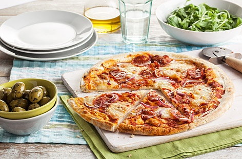

Magic Recieps
Burger

- 500g (16oz) Wrights bread mix
- 1tsp olive oil
- plain flour, semolina, or polenta for sliding pizzas into the oven
- 400g (13oz) passata
- 200g (7oz) pepperoni slices
- 300g (10oz) fresh mozzarella sliced and drained well
- 1 small red onion cut into thin half moons
- ew round lettuce leaves, torn
- 1 beef tomato, sliced
- 1tsp crushed red chili flakes
Method
- Mix the dough according to the directions on the pack. Knead it on a worktop, or in a standing electric mixer with a dough hook, for about 8-10 minutes. Coat the dough in the olive oil, place in a large bowl, cover with a clean tea towel and leave to rise in a warm place until doubled in size. It should take 1-2 hours.
- Preheat the oven to gas 2, 240°C, fan 220°C. Put a pizza stone or flat metal baking tray on the middle rack. Sprinkle a flat metal baking sheet generously with the plain flour – this will help the pizza glide from the sheet onto the hot metal tray in the oven.
- Cook the burgers on a preheated barbecue or griddle for 5-6 minutes on each side. While the second side is cooking, lay a slice of cheese on top to melt slightly (if using).
- Divide the dough into four balls. Roll out one at a time, about 12in (30cm) across, and place on the floured sheet. Spread a quarter of the tomato sauce on the pizza, then top with one quarter of the cheese, one quarter of the pepperoni and some onions. Open the oven door and slide the pizza from the flour-coated sheet onto the hot stone or tray. Cook for 5 minutes or until golden and crisp around the sides. Repeat with the other three dough balls. Slice and serve immediately.